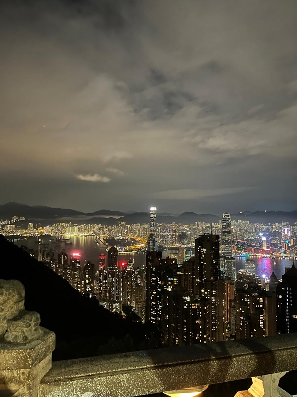

Victoria Peak: Do It Right, Do It Cheap
Everyone goes to the Peak. Most people pay for the mall's observation deck, when the best view is free.
Three ways up
| Way up | Cost (HK$) | Time | Good for |
|---|---|---|---|
| Peak Tram | 116 return, 82 one way | ~6 min ride, plus queue | The classic steep ride |
| Bus 15 from Central | 13 | 40–60 min | Views the whole way, no queue |
| Walk up Old Peak Road | Free | About 1 hour | Doing it once for the story |
The tram has a long queue in the afternoon. The operator says 8–10am is its quietest time. A good student plan: take Bus 15 up for sunset, walk around, and take the tram or bus down.

At the top
Skip the Sky Terrace 428 ticket (HK$80). Walk the Lugard Road loop instead. It's flat, takes about 45 minutes, and gives you the full harbour panorama for free. Cloud ruins the view, so check the weather. A hazy day means photos of white fog.